Операционные системы. Часть 5 — «Установка и настройка CachyOS» ⚡¶
В прошлых частях мы уже успели сделать две важные вещи: сначала собрали нормальную загрузочную флешку с Ventoy, а потом поставили и настроили Arch Linux. И вроде бы всё хорошо, всё «настоящим способом»… но потом приходит реальная жизнь, и ты понимаешь: иногда хочется не героически разгребать очередной конфликт конфигов, а просто сесть и пользоваться системой.
Поэтому сегодня будет не очередной ритуал с «голым Арчем», а знакомство с CachyOS — Arch‑based системой, которая старается быть дружелюбнее к обычному человеку и при этом не превращается в тыкву. Почему я решил перейти на неё? Потому что я устал воевать с HyDE, чинить странные баги и в очередной раз ловить настроение «ну ща ещё пару часов поковыряю, и будет красиво». Хватит. Я выбрал быть счастливым 😌
В этой статье снова пройдём путь от ISO до полностью настроенной системы: установка, подводные камни, зеркала, загрузчик, первый запуск, мои конфиги, базовый софт, дуалбут, шрифты, SSH/GPG и прочие радости взрослой линуксовой жизни.
Данная статья обещает быть насыщенной. Очень.
🧭 План работ¶
- Скачаем CachyOS ISO и закинем его на флешку через Ventoy.
- Пройдём установщик шаг за шагом и не потеряем рассудок.
- Разберём неприятный момент с зеркалами и
pacman. - Выберем окружение рабочего стола и поговорим, почему я остановился на Niri.
- Сделаем первичную настройку системы после первого входа.
- Накатим мои конфиги или повторим все шаги вручную.
- Поставим базовый софт, шрифты, инструменты разработки и всё нужное для жизни.
- Добавим Windows в GRUB, если у вас дуалбут.
- Доведём систему до состояния «вот теперь красиво и работоспособно».
💿 Скачиваем ISO и закидываем на Ventoy¶
Начинаем, как обычно, с официального сайта CachyOS: скачиваем последний актуальный ISO‑образ. Это важно: если брать древнюю сборку, установщик потом с радостью скажет вам, что мир изменился, пакеты уехали, зеркала мутировали, а жить нужно по‑новому.
После скачивания просто закидываем ISO на флешку с Ventoy.
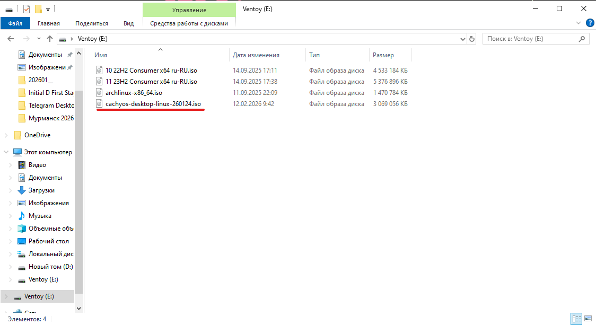
Да, за это я и люблю Ventoy: не нужно каждый раз заново «прожигать» флешку. Просто кинул ISO как обычный файл — и пошёл дальше. Цивилизация всё‑таки существует.
Если диск под систему у вас уже занят чем‑то старым и ненужным — очищаем его так же, как в прошлых частях. Подробно останавливаться на этом не буду.
🥾 Загружаемся с флешки¶
Дальше всё по классике:
- Перезагружаем ПК.
- Заходим в UEFI/BIOS.
- Ставим флешку на первое место в порядке загрузки.
- Загружаемся в CachyOS LiveISO.
И вот тут нас ждёт маленький праздник: вместо унылой консоли нас встречает GUI‑установщик.
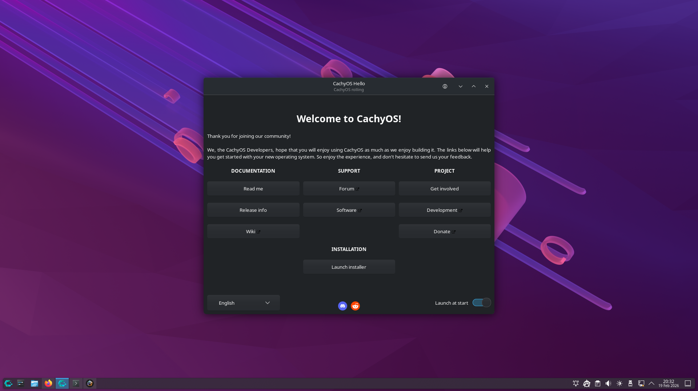
Да, тру‑линуксоиды могут начать неодобрительно покашливать в углу. Но я, как уже говорил, выбрал быть счастливым. Консоль мы уже тыкали в Arch. Можно и на уровень выше подняться.
🪞 Проблема с зеркалами: почему установка может внезапно пойти лесом¶
Теперь о неприятном.
Во время установки CachyOS ранжирует зеркала — то есть пытается выбрать самые быстрые и близкие. И сама идея хорошая. Но в моём случае в список стабильно попадали проблемные зеркала вроде archlinux.gay и иногда yandex, которые были недоступны с моей стороны. Итог — ошибки pacman, потерянное время, раздражение и вечное «ну почему опять именно сейчас?».
Чтобы открыть терминал в LiveISO, жмём:
Ctrl + Alt + T
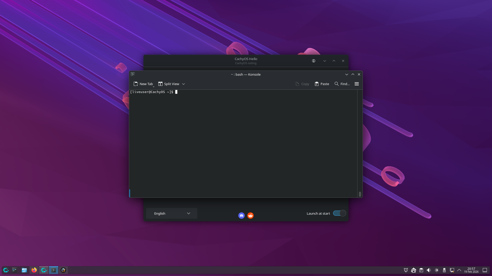
Если в процессе установки или подготовки системы вы ловите ошибки, связанные с зеркалами и pacman, можно сначала руками поправить ситуацию.
Повторно ранжируем зеркала¶
sudo cachyos-rate-mirrors
Ищем проблемные зеркала в mirrorlist¶
sudo grep -RInE '(archlinux\.gay|yandex)' /etc/pacman.d | head
Удаляем их из списков¶
for f in /etc/pacman.d/mirrorlist /etc/pacman.d/*mirrorlist*; do
[ -f "$f" ] || continue
if sudo grep -qE '(archlinux\.gay|yandex)' "$f"; then
echo "Cleaning: $f"
sudo cp -a "$f" "$f.bak"
sudo sed -i -E '/archlinux\.gay/d;/yandex/d' "$f"
sudo grep -nE '(archlinux\.gay|yandex)' "$f" || echo " -> OK (no matches)"
fi
done
Обновляем базы пакетов¶
sudo pacman -Syy
Важно
Это помогает для текущей Live‑сессии. Но сам установщик потом может снова переранжировать зеркала и снова затащить туда проблемные адреса.
В моём случае я вообще прокидывал туннель на свой сервер, чтобы всё заработало нормально. Подробности этого цирка здесь расписывать не буду — у каждого сеть, ограничения и уровень терпения свои.
UPD от 15.03.2026
На момент написания обновления у меня эта проблема уже перестала проявляться так жёстко, и установка обычно шла без тоннеля. Но блок выше оставляю. Сегодня работает, завтра уже нет.
🛠️ Установка CachyOS — шаг за шагом¶
Теперь идём по самому установщику. Я покажу, что выбирал я, и попутно прокомментирую, где стоит подумать головой, а где можно смело жать «Далее».
1) Язык системы¶
В этот раз я решил поставить русский язык и проверить, насколько система вообще готова к такому сценарию. Раньше я почти всегда сидел на английском, но тут захотелось эксперимента.
2) Запуск установщика¶
Запускаем установщик прямо из LiveISO.
3) Welcome / приветствие¶
Выбираем русский язык.
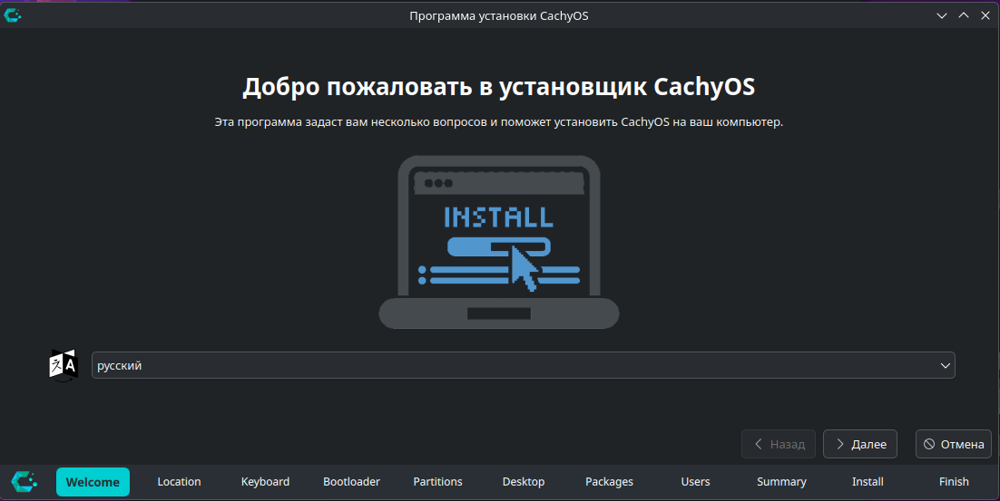
4) Location¶
Я выставлял Европа → Москва. У вас, разумеется, должен быть ваш часовой пояс. Тут важно понимать: это просто настройки региона, формата дат и времени.
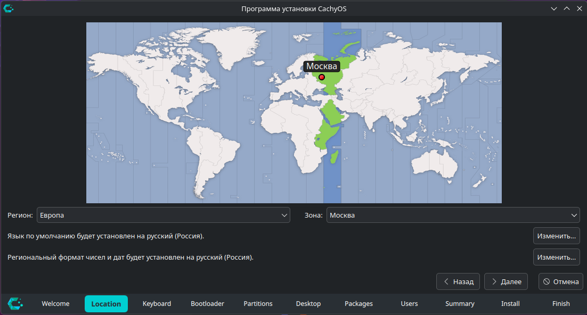
5) Клавиатура¶
Здесь я тоже выбрал русский, но, если честно, полностью это меня не спасло: часть вещей всё равно потом пришлось править уже в конфиге системы руками.
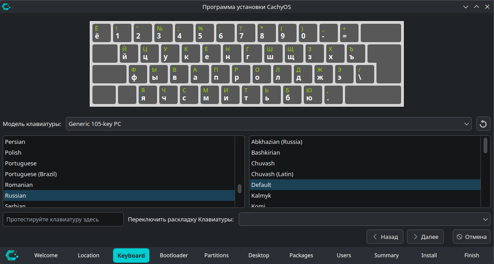
6) Загрузчик¶
Выбираю GRUB.
Почему так:
- GRUB — старый, понятный, переживший многое.
- systemd-boot я пробовал, но быстро понял, что нормально и без лишней возни настроить через него дуалбут у меня не получается.
- Остальные варианты я либо не трогал, либо они мне просто не интересны.
Итог: берём GRUB и живём спокойно.
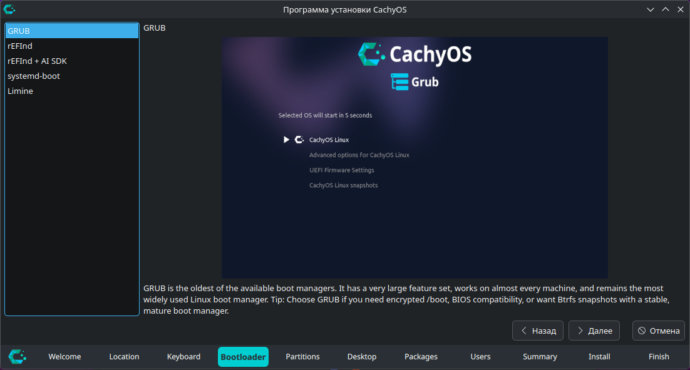
7) Разметка диска¶
Я ставил систему на отдельный диск, который заранее очистил. Поэтому тут всё просто: выбираем диск, используем btrfs, идём дальше.
Если вы ставите рядом с Windows на один диск, тут уже начинается взрослая жизнь. Скорее всего, понадобится Manual partitioning, и разработчики сами предупреждают, что автоматическая разметка в таком сценарии может сработать неидеально.
Так что если у вас дуалбут на одном диске — не спешите, проверяйте всё внимательно и не надейтесь на «и так сойдёт». Оно может. Но может и нет.
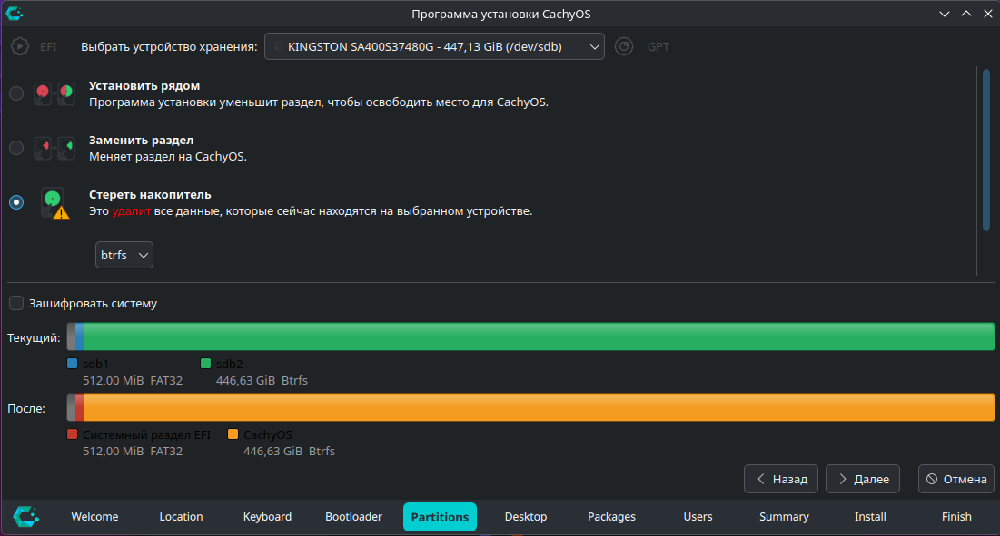
8) Выбор Desktop Environment / Window Manager¶
Вот здесь уже интересно.
Вариантов много. Очень много.
- Хотите чего‑то старого, крепкого и проверенного? Можно брать i3.
- Хотите красивого и современного? Смотрите в сторону новых композиторов.
- Хотите страдать в богатом интерфейсе? Ну, для этого тоже всё предусмотрено 😏
Лично у меня выбор был таким:
- i3 — люблю, пользовался долго, уважаю. Но это всё же X11, а мне хотелось окончательно ехать дальше.
- Hyprland — уже был, уже проходили, уже достаточно. Красиво, эффектно, но в моём сценарии слишком часто приходилось разруливать конфликты и ловить странные поломки.
- KDE / XFCE / GNOME — тут без войны, но честно: мне просто не нравится этот вайб. Тяжеловато, местами перегружено, местами некрасиво лично для меня. Если вам нравится — прекрасно. Но я пишу про свой сетап.
В итоге я остановился на Niri.
Почему именно Niri¶
Niri — это не просто «ещё один тайловый менеджер окон». Это scrollable‑tiling Wayland compositor с очень приятной логикой работы:
- окна живут в колонках;
- рабочее пространство как будто тянется в ширину;
- новые окна не устраивают погром в уже открытой раскладке;
- навигация ощущается плавной и логичной;
- всё выглядит свежо, современно и без ощущения, что ты сидишь в музее оконных менеджеров.
Что мне в нём понравилось:
- предсказуемость — окна не прыгают как бешеные;
- приятная работа с несколькими окнами на одном рабочем пространстве;
- Wayland без желания немедленно пойти чинить полсистемы;
- хороший баланс между «минимализмом» и «это всё‑таки можно использовать каждый день».
Из минусов:
- он не настолько привычен, как i3;
- некоторые вещи поначалу ощущаются непривычно после классических тайлинговых WM;
- всё равно придётся почитать конфиги и понять философию работы.
Но в целом Niri очень быстро дал мне ощущение: вот это уже похоже на систему, с которой я реально хочу жить каждый день.
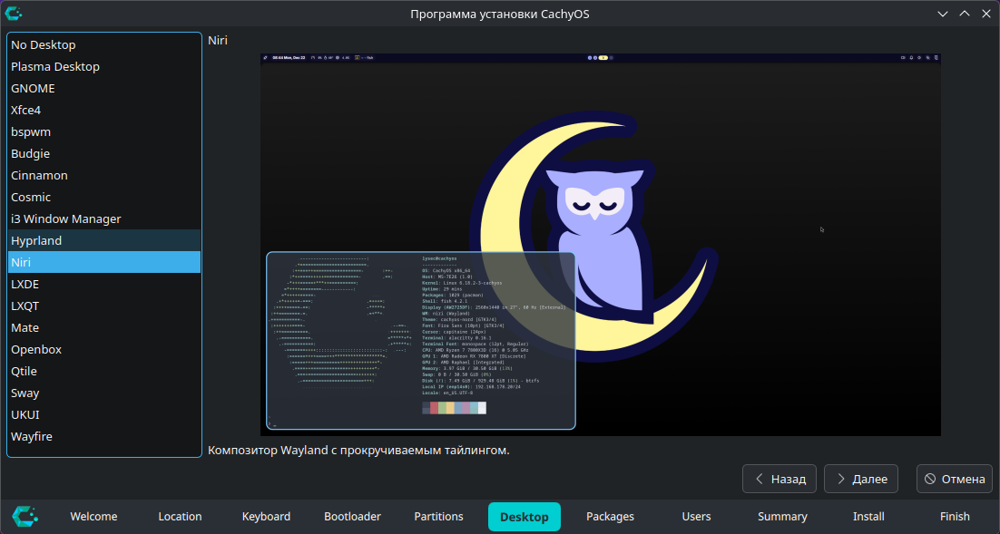
9) Список пакетов¶
На этом шаге можно сразу отметить дополнительные пакеты, которые хочется поставить во время установки. Я обычно часть добиваю потом руками — так понятнее, что именно попало в систему.
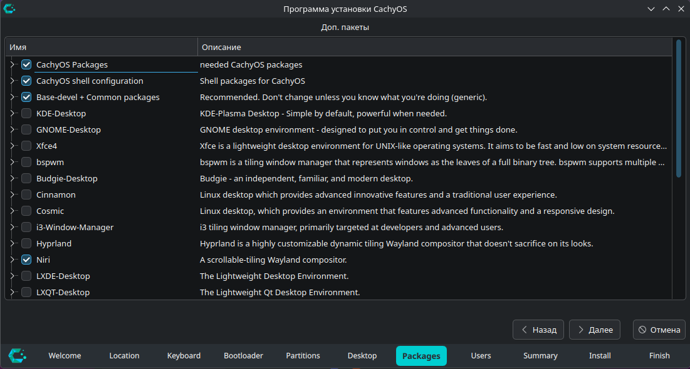
10) Создание пользователя¶
Здесь всё стандартно: имя пользователя, пароль, имя машины и так далее.
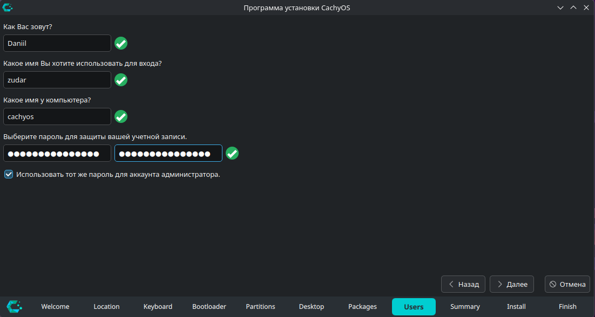
11) Итоги перед установкой¶
Вот этот экран обязательно читаем внимательно. Да, скучно. Да, хочется уже нажать «Установить». Но именно здесь проще всего заметить, что вы случайно выбрали не тот диск, не тот загрузчик или не ту раскладку.
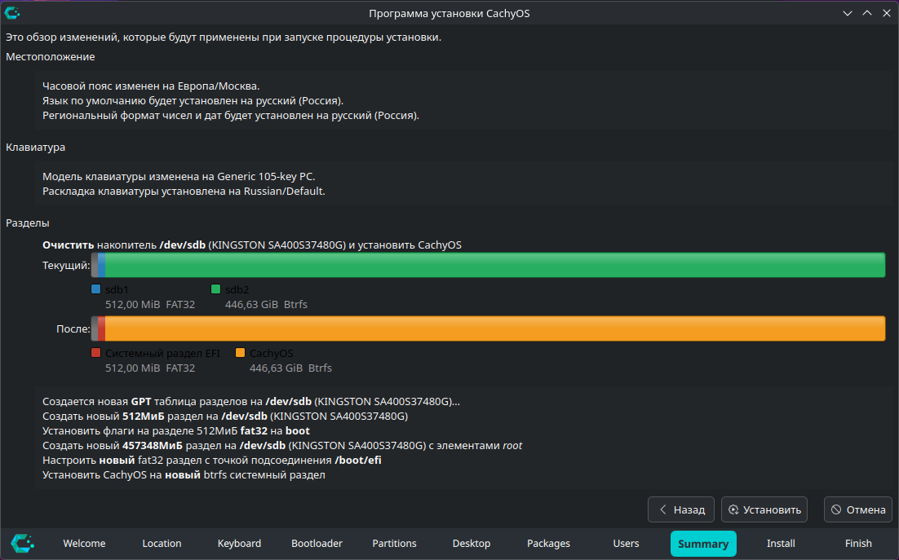
12) Сама установка¶
Если всё настроили нормально, дальше установщик работает уже сам.
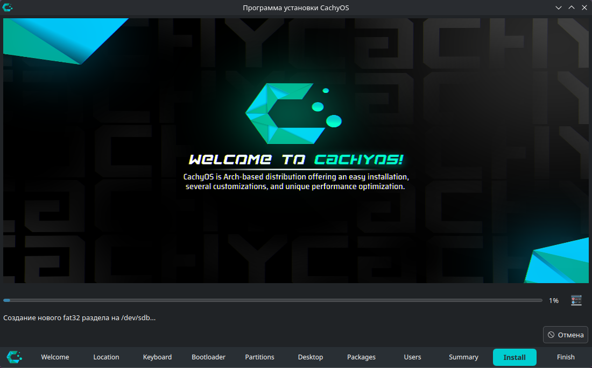
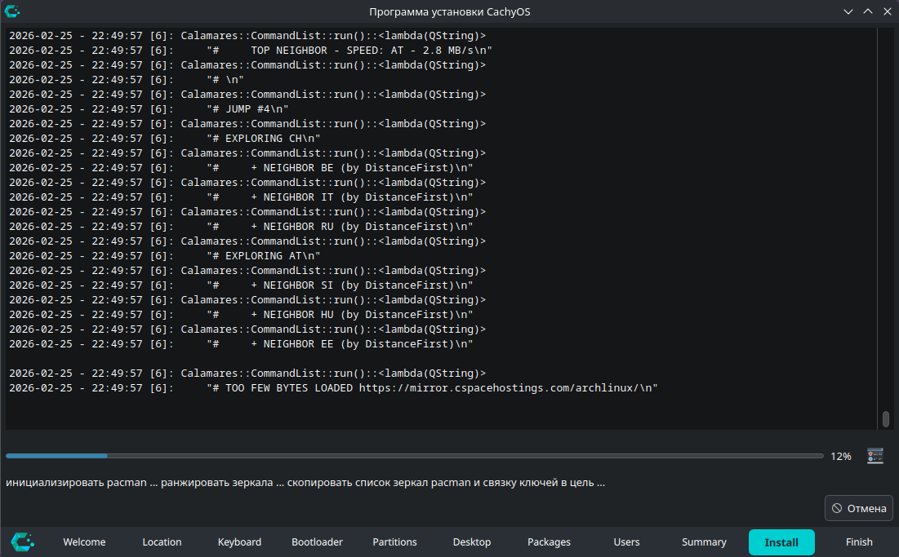
Если что‑то падает — без магии: смотрим логи, читаем ошибки, разбираемся по факту. Linux по‑другому не лечится. Обязательно перезагружаемся перед повторной попыткой установки (так завещали сами разработчики).
13) Финал установки¶
У меня установка занимала примерно около 30 минут, но тут всё зависит от интернета, зеркал, настроения пакетного менеджера и общего расположения звёзд.
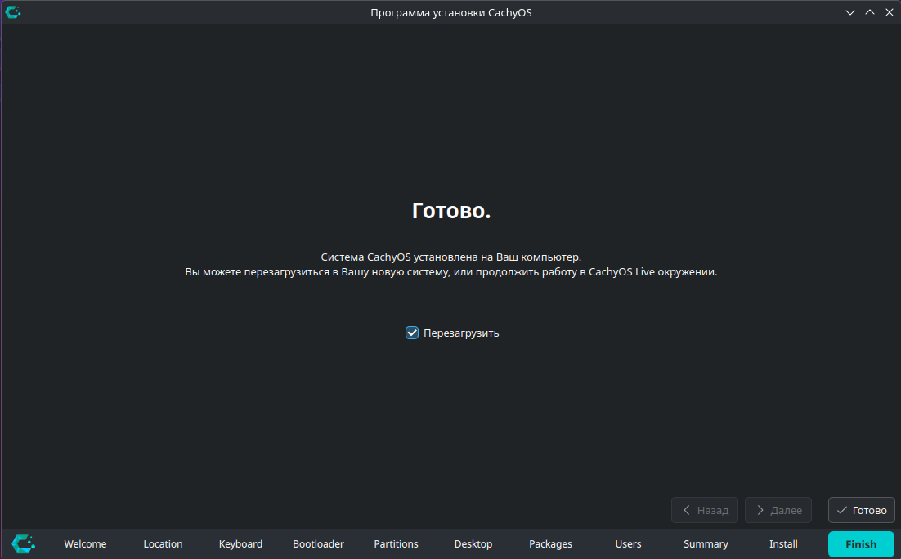
🚪 Первый запуск системы¶
После установки:
- Перезагружаемся.
- Выбираем в UEFI загрузку через GRUB.
- Заходим в свою новенькую систему.
Сразу скажу честно: мне понадобилось несколько перезагрузок, прежде чем всё заработало именно так, как я хотел. Так что если с первого раза не вышло — это не вы плохой, это просто Linux напоминает, что бесплатный сыр бывает только в командах pacman -S.
🎨 Первая настройка после входа¶
После первого входа нас встречает базовая настройка окружения. У меня это выглядело так:
- включаем сбор статистики — да, я включил; пусть опенсорсные бедолаги тоже получают хоть немного данных;
- выбираем директорию с обоями;
- настраиваем цветовую схему;
- выбираем оформление панели, дока и прочих элементов интерфейса.
Я остановился на светлой и тёплой теме Kanagawa.
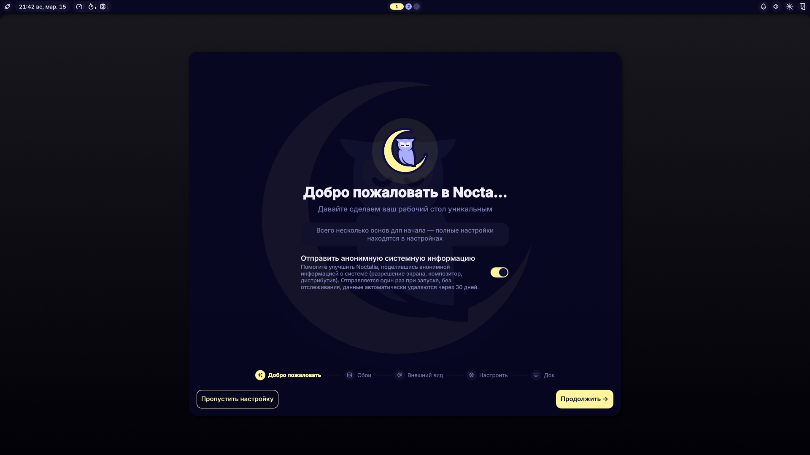
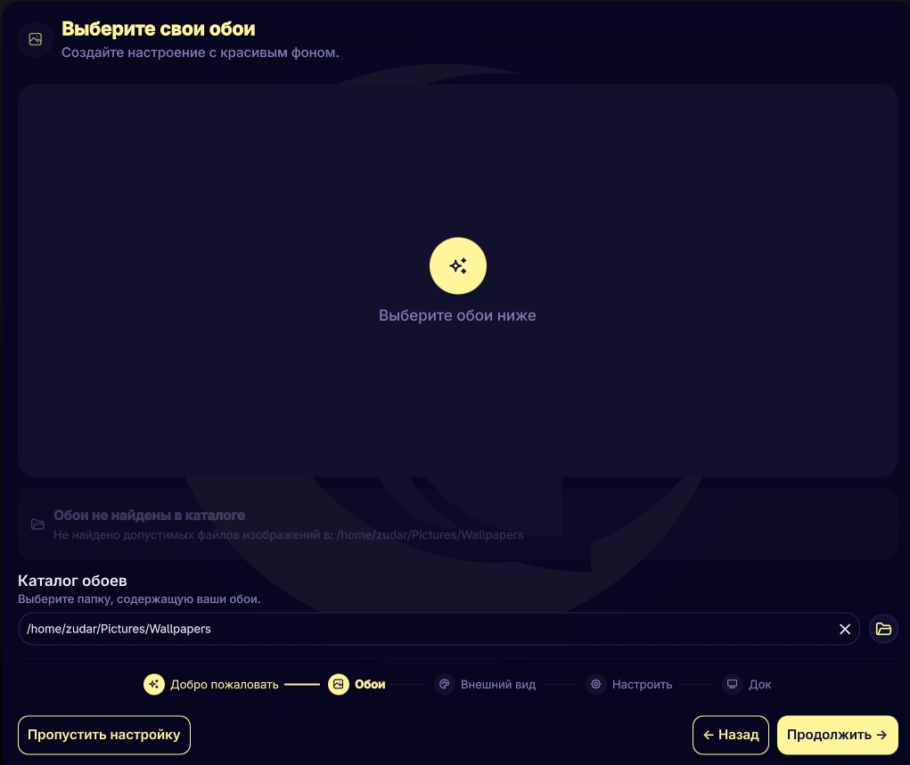
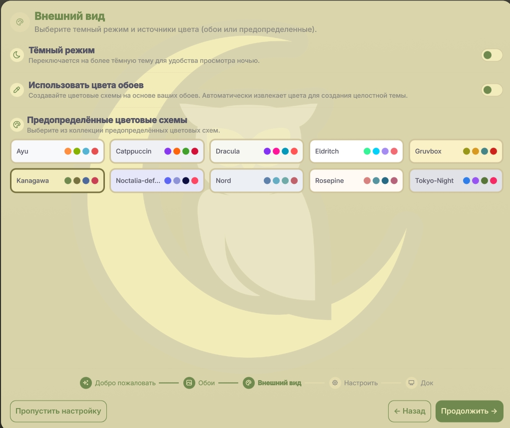
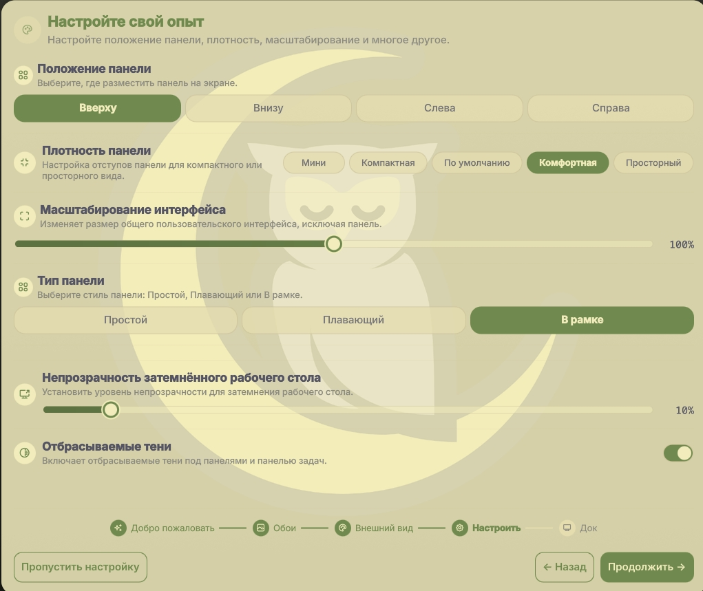
В целом, всё это потом можно поменять через настройки в панели. Но, как обычно, есть и более быстрый путь: просто забрать мои конфиги и не изобретать велосипед, квадратное колесо и новую религию одновременно.
📁 Мои конфиги для CachyOS¶
Я специально подготовил отдельный репозиторий с конфигами:
https://github.com/zudaR107/cachyos-configs
Там уже лежит мой набор настроек под систему, плюс есть скрипт автоматической установки и первоначальной настройки.
Как забрать репозиторий¶
mkdir -p ~/Sandbox
cd ~/Sandbox
git clone https://github.com/zudaR107/cachyos-configs
cd cachyos-configs
Что умеет скрипт¶
./scripts/install.sh --help
./scripts/install.sh --dry-run
./scripts/install.sh --backup-dir <path>
Где:
--help— посмотреть справку;--dry-run— увидеть, что будет сделано, без реального применения;--backup-dir <path>— переопределить путь, куда будут сохранены текущие конфиги перед заменой.
Важно
Если словили ошибку — сперва попробуйте понять и поправить её сами. А потом напишите мне, чтобы я смог обновить репозиторий и сделать всё лучше для следующих людей. Коллективное страдание — база open source.
🔧 Если хотите всё настроить руками¶
Скрипт — это удобно. Но если вы хотите полностью понимать, что и зачем меняется в системе, ниже продублирую основные шаги в более ручном режиме.
1) Обновляем систему и базы пакетов¶
sudo pacman -Syu
Если нужно принудительно заново скачать базы, используйте:
sudo pacman -Syyu
Полезные команды на каждый день:
sudo pacman -S <имя_пакета> # установить пакет
pacman -Ss <имя_пакета> # поиск по репозиториям
yay <имя_пакета> # поиск/установка через AUR
man <команда> # документация
<команда> --help # краткая справка
Я стараюсь обновлять систему почти каждый день и перестал бояться rolling release. Стало легче жить. Главное — не запускать обновления в 3 ночи перед важной работой. Хотя… кого я обманываю.
2) По возможности берём пакеты из CachyOS‑репозиториев¶
Если пакет есть в cachyos-*, часто там он будет свежее, чем в стандартных репозиториях. Это не значит «всегда бездумно ставим всё оттуда», но смотреть туда имеет смысл.
📦 Мой набор нужных пакетов¶
Ниже — не «объективно лучший список для всего человечества», а мой рабочий набор, с которым я живу, пишу код, копаюсь в железках и не чувствую себя голым.
Шрифты и база¶
- ttf-ubuntu-font-family — базовые Ubuntu‑шрифты для нормального внешнего вида системы.
- ttf-ubuntu-mono-nerd — мой любимый моноширинный шрифт для терминала, редактора и красивых иконок в prompt.
- yay — AUR‑хелпер. Без него на Arch‑based системах жить можно, но зачем.
- rsync — нормальное копирование файлов и конфигов. Когда надо аккуратно синхронизировать директории, а не просто махнуть
cp -aи надеяться на лучшее.
Повседневный софт¶
- telegram-desktop — Telegram. Тут без комментариев.
- onlyoffice-bin — офисный пакет. Для тех случаев, когда документы всё ещё существуют.
- zip / unzip — ZIP‑архивы. Основа основ.
- unarchiver —
unar/lsarдля распаковки всякого экзотического добра. - pwgen — генератор паролей.
- tree — красиво показать дерево файлов и почувствовать контроль над проектом.
- fastfetch — быстрый системный summary в терминале.
- onefetch — почти fastfetch, но для git‑репозиториев.
- wlsunset — тёплый оттенок экрана вечером. Глаза спасибо скажут.
- cliphist — история буфера обмена. Один раз привыкаешь — назад уже не хочется.
- yazi — очень приятный консольный файловый менеджер.
- ex-vi-compat — маленькая, но полезная совместимость со старыми
vi‑привычками. - neovim — ну а вдруг захочется открыть что‑то быстро и почувствовать себя элитой.
Разработка и отладка¶
- code — Code - OSS / VS Code‑подобный редактор. Мой основной GUI‑редактор.
- qtcreator — Qt Creator. Для C++/Qt‑проектов незаменим.
- lldb — отладчик.
- bear — генерация
compile_commands.jsonдля C/C++ проектов. - arm-none-eabi-gcc — компилятор под ARM Cortex‑M.
- arm-none-eabi-gdb — GDB для ARM.
- arm-none-eabi-binutils — binutils под ARM.
- arm-none-eabi-newlib — стандартная библиотека для embedded‑сборок.
- picocom — минималистичный терминал для COM/UART.
- openocd — прошивка и отладка микроконтроллеров.
- stlink — инструменты под ST‑Link.
- jlink — инструменты под SEGGER J‑Link.
- stm32cubemx — генерация проекта и инициализации для STM32.
- stm32cubeprog — прошивка STM32.
- stm32cubeide — IDE от ST, если хочется иногда жить и так.
Оболочка и безопасность¶
- gnupg — GPG для подписи коммитов.
- pinentry — ввод пароля для GPG без боли.
- starship — красивый и быстрый prompt.
И ещё вот это¶
- ___ — поняли, да? 😏
🔤 Ставим шрифты Ubuntu Mono¶
Если шрифты не приехали сразу или хотите просто убедиться, что всё на месте:
sudo pacman -Sy --needed ttf-ubuntu-font-family ttf-ubuntu-mono-nerd
fc-cache -f
fc-list | grep -i "Ubuntu Mono" | head
Где:
- первая команда — ставит нужные шрифты;
fc-cache -f— обновляет кеш шрифтов;fc-list | grep— позволяет быстро проверить, что система шрифты реально видит.
🪟 Делаем дуалбут с Windows¶
Если рядом стоит Windows, её обычно нужно явно подцепить в GRUB через os-prober.
Сначала проверяем, что Windows Boot Manager вообще существует¶
sudo efibootmgr -v | grep -i "Windows" -n || true
Затем правим /etc/default/grub¶
Добавляем или раскомментируем строку:
GRUB_DISABLE_OS_PROBER=false
Проверяем, что os-prober реально видит Windows¶
sudo os-prober
Пересобираем конфиг GRUB¶
sudo grub-mkconfig -o /boot/grub/grub.cfg
После этого перезагружаемся — и в меню GRUB должен появиться пункт с Windows.
В моём случае этого хватило. Если у вас не хватило — значит, пора смотреть в сторону конкретной разметки диска, EFI‑раздела и того, что именно вы успели сделать с загрузчиком до этого.
🔑 SSH и 🔏 GPG¶
Эту часть я вынес в отдельную подробную статью, чтобы не превращать текущую в энциклопедию всех земных страданий:
https://docs.zudar.ru/git/ssh-gpg/
Там отдельно разобраны:
- генерация SSH‑ключей;
- настройка ssh-agent;
- создание и подключение GPG‑ключа;
- настройка Git для подписанных коммитов.
🧩 Переносим конфиги вручную¶
Если не используете скрипт и хотите руками перенести настройки, просто забираем нужные файлы из репозитория и раскладываем их по ~/.config/.
Смотрите внимательно, что именно копируете: я старался всё документировать, но слепо перетаскивать весь репозиторий поверх своей системы я всё равно не советую.
Важно
Обязательно замените все абсолютные пути вида /home/zudar/ на свои собственные. Иначе часть настроек будет ссылаться в пустоту, а вы потом будете удивляться, почему что‑то «магически не работает».
✨ Что получилось в итоге¶
И вот после всех этих действий система уже выглядит не как «ну поставил Linux, и что теперь», а как реально красивая и удобная рабочая среда.
Рабочий стол¶
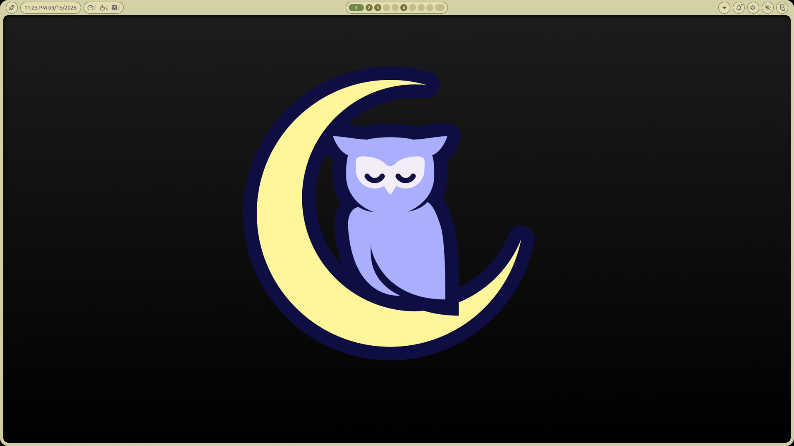
Лаунчер приложений¶
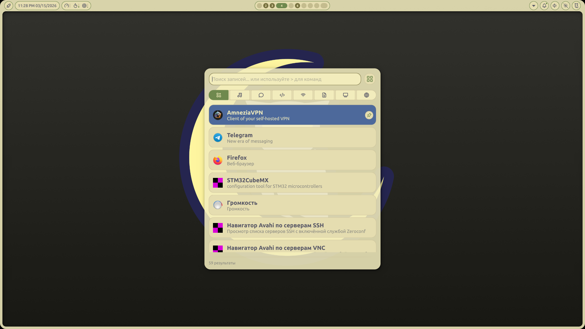
Выключение¶
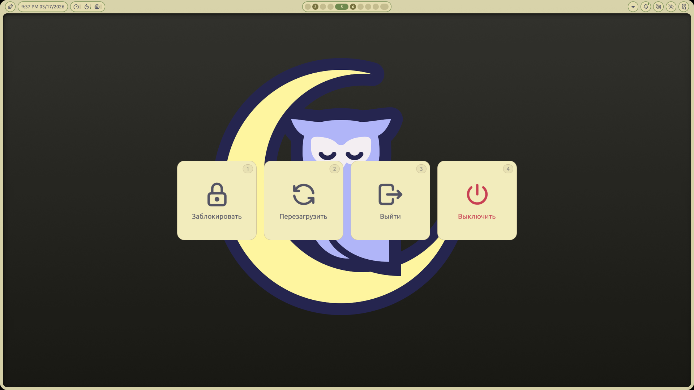
Календарь¶
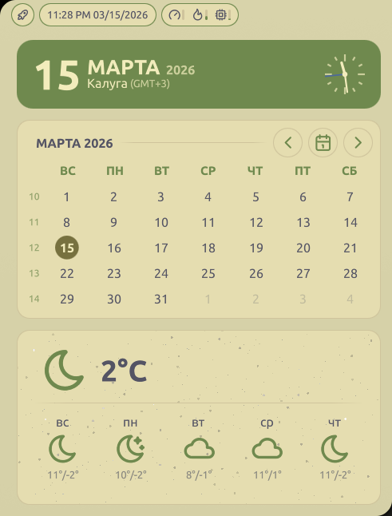
Погода и настройки¶
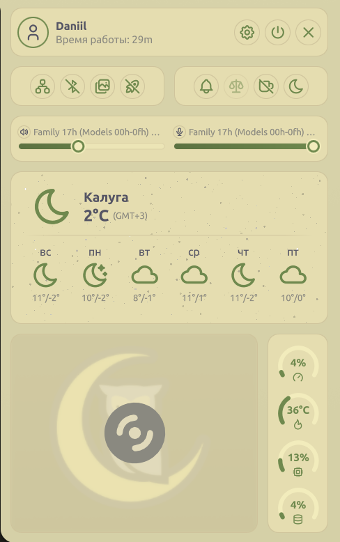
Потребление ресурсов¶
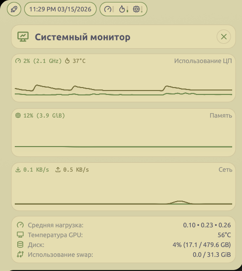
btop¶
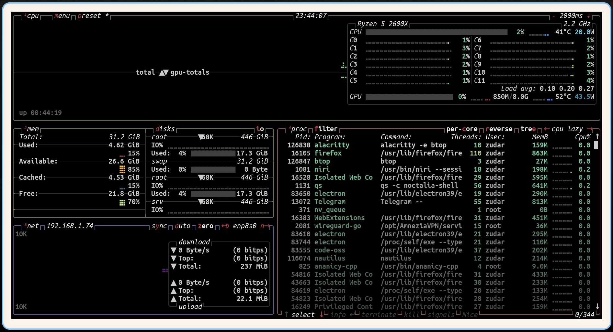
Уведомления¶
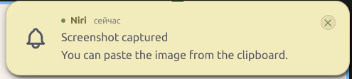
Code - OSS¶
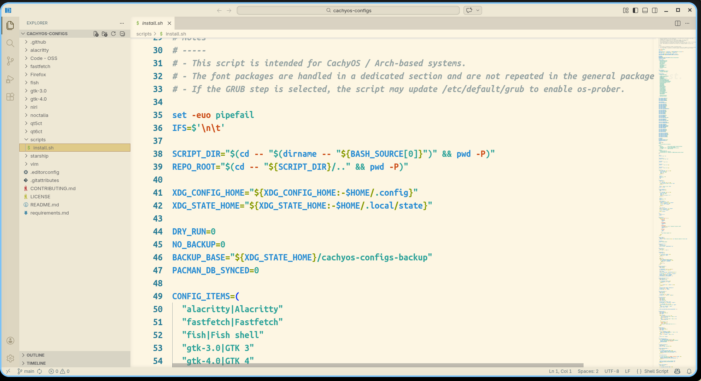
Консоль¶
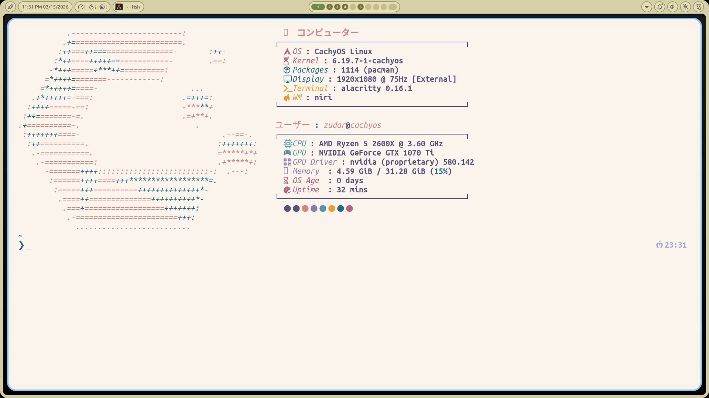
Yazi — текстовый файловый менеджер¶
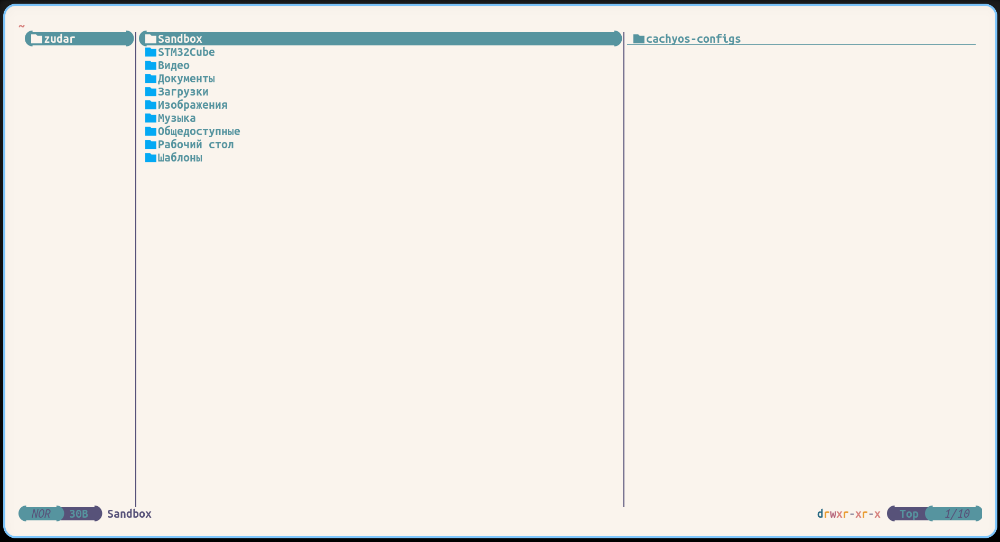
Nautilus — GUI файловый менеджер¶
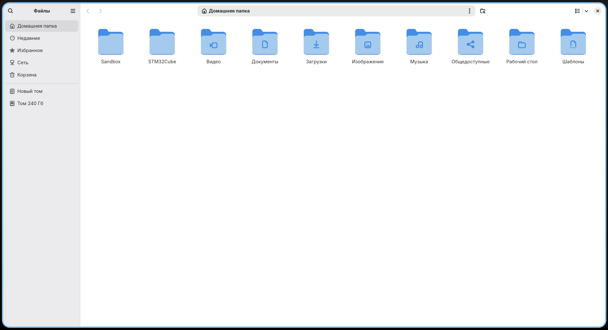
Weathr — консольная погода¶
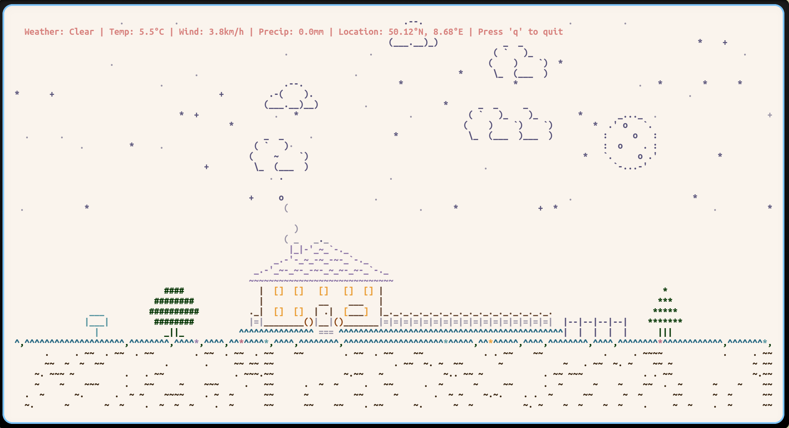
Asciiquarium — постоянная рубрика¶
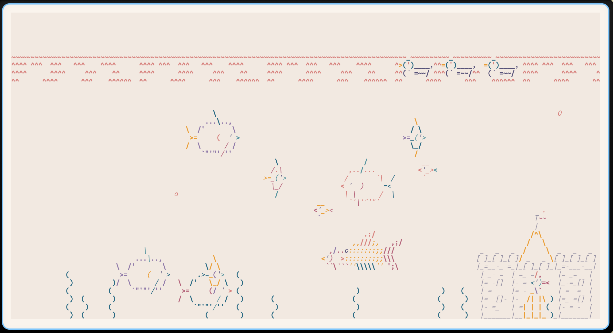
Мои клавиши¶
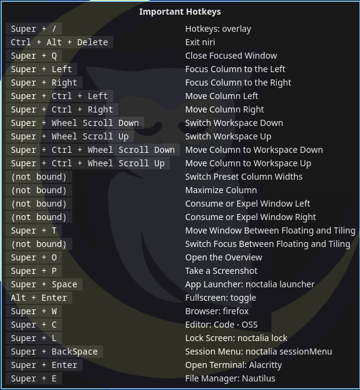
Да, вот такую красоту мы в итоге и получаем. И это уже тот случай, когда систему действительно хочется открыть просто потому, что она приятная.
🗂️ Где что настраивать в моих конфигах¶
Ниже — краткая карта по основным файлам, чтобы потом не искать нужный параметр методом научного тыка.
alacritty/alacritty.toml— настройки терминала Alacritty: шрифт, размер текста, цвета, прозрачность, отступы, размеры окна, курсор, скролл и горячие клавиши.fish/config.fish— главный конфиг Fish: алиасы, сокращения, запускssh-agent, инициализация Starship,fzfи прочих полезностей.fish/functions/— отдельные пользовательские функции Fish: быстрые переходы, обёртки дляyazi,dufи прочего.fish/hyde_config.fish— базовые переменные окружения, в первую очередь XDG‑пути.starship/starship.toml— внешний вид shell prompt: git‑ветка, языки, статус команды, время и всё остальное.fastfetch/config.jsonc— оформлениеfastfetch: какие данные показывать и как именно.niri/config.kdl— главная точка входа для конфига Niri.niri/cfg/input.kdl— раскладки, тачпад, мышь, NumLock, поведение ввода.niri/cfg/keybinds.kdl— основные горячие клавиши.niri/cfg/layout.kdl— отступы, ширина колонок, поведение раскладки.niri/cfg/misc.kdl— переменные окружения для Wayland / Qt / Electron и другие дополнительные параметры.noctalia/settings.json— настройки оболочки Noctalia: панель, лаунчер, центр управления, уведомления, виджеты, обои и поведение интерфейса.noctalia/colors.json— цветовая схема Noctalia.noctalia/plugins.json— плагины Noctalia.gtk-3.0/settings.iniиgtk-4.0/settings.ini— тема GTK‑приложений, иконки, курсор, базовый шрифт.qt5ct/qt5ct.confиqt6ct/qt6ct.conf— внешний вид Qt‑приложений.Code - OSS/settings.jsonc— шрифт, тема, поведение редактора, терминал и прочее.Code - OSS/extensions.txt— список используемых расширений.Firefox/user.js— пользовательские настройки Firefox: приватность, телеметрия, стартовая страница, PDF viewer и др.Firefox/extensions.txt— список расширений Firefox.vim/vimrc— главный пользовательский конфиг Vim.vim/hyde.vim— базовые настройки Vim под текущее окружение.vim/colors/wallbash.vim— используемая цветовая схема.scripts/bootstrap.sh— интерактивный скрипт первоначальной настройки: пакеты, шрифты, SSH/GPG, Git, перенос конфигов и т. д.
Если хочется покрутить что‑то именно в поведении оконного менеджера — почти всегда смотреть нужно в:
niri/cfg/keybinds.kdlniri/cfg/input.kdlniri/cfg/layout.kdl
⌨️ Основные хоткеи моей системы¶
Mod = клавиша Win / Super.
Запуск приложений¶
- Mod + Return — открыть Alacritty
- Mod + W — открыть Firefox
- Mod + C — открыть Code - OSS
- Mod + E — открыть Nautilus
- Mod + Space — открыть лаунчер приложений
Система и окна¶
- Mod + L — заблокировать экран
- Mod + Q — закрыть окно
- Mod + F — fullscreen
- Mod + T — floating‑режим
- Mod + O — открыть overview
- Mod + Tab — предыдущий рабочий стол
Навигация¶
- Mod + Left / Mod + H — перейти влево
- Mod + Right — перейти вправо
- Mod + Up / Mod + K — перейти вверх
- Mod + Down / Mod + J — перейти вниз
- Mod + 1…9 — перейти на рабочий стол 1…9
- Mod + Alt + 1…9 — переместить окно на рабочий стол 1…9
Скриншоты и мультимедиа¶
- Mod + P — сделать скриншот
- XF86AudioRaiseVolume / XF86AudioLowerVolume — громкость
- XF86AudioMute — выключить звук
- XF86AudioMicMute — выключить микрофон
- XF86AudioPlay / XF86AudioPause — play / pause
- XF86AudioNext / XF86AudioPrev — следующий / предыдущий трек
- XF86MonBrightnessUp / XF86MonBrightnessDown — яркость
🔄 Обновления и жизнь дальше¶
Не стесняемся обновляться:
sudo pacman -Syu
И да, я действительно советую делать это регулярно.
Пока что каких‑то критических проблем в CachyOS я у себя не обнаружил. А если что‑то и находил — обычно решал в тот же вечер. По сравнению с моим прошлым сетапом это уже звучит почти как идеал.
🏁 Итог¶
Вот так мы и получаем более дружелюбную систему для обычного пользователя, но без ощущения, что нас совсем уж лишили контроля над машиной.
У нас на руках:
- современная Arch‑based система;
- удобный GUI‑установщик;
- рабочий GRUB;
- Niri как приятный и современный Wayland‑композитор;
- настроенные шрифты, пакеты, конфиги и рабочая среда;
- возможность жить дальше без постоянного желания что‑то срочно чинить.
Лично для меня CachyOS оказался той самой точкой, где можно всё ещё получать удовольствие от Linux, но уже без постоянного ритуального самобичевания.
Если у вас будут вопросы — пишите мне. Если найдёте косяк в конфиге — тем более пишите. Если всё поставилось с первого раза — поздравляю, вы либо очень удачливы, либо просто сделали всё аккуратно и не пытались сломать систему раньше времени 😄
Всем мира, быстрых зеркал и рабочих систем 🖤